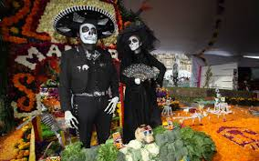

DIA DE MUERTOS
Perfil de egreso
El Día de Muertos es una celebración mexicana de origen mesoamericano1 que honra a los difuntos el 2 de noviembre, comienza desde el 1 de noviembre, y coincide con las celebraciones católicas de Día de los Fieles Difuntos y Todos los Santos.
- Los orígenes de la celebración del Día de Muertos en México son anteriores a la llegada de los españoles. Hay registro de celebraciones en las etnias mexica, maya, purépecha y totonaca. Los rituales que celebran la vida de los ancestros se realizan en estas civilizaciones por lo menos desde hace tres mil años
- El paso de la vida a la muerte es un momento emblemático que ha causado admiración, temor e incertidumbre al ser humano a través de la historia. Por muchos años, en diversas culturas se han generado creencias en torno a la muerte que han logrado desarrollar toda una serie de ritos y tradiciones ya sea para venerarla, honrarla, espantarla e incluso para burlarse de ella. México es un país rico en cultura y tradiciones; uno de los principales aspectos que conforman su identidad como nación es la concepción que se tiene sobre la vida, la muerte y todas las tradiciones y creencias que giran en torno a ellas.
- Los orígenes de la celebración del Día de Muertos en México son anteriores a la llegada de los españoles. Hay registro de celebraciones en las etnias mexica, maya, purépecha y totonaca. Los rituales que celebran la vida de los ancestros se realizan en estas civilizaciones por lo menos desde hace tres mil años. Entre los pueblos prehispánicos era común la práctica de conservar los cráneos como trofeos y mostrarlos durante los rituales que simbolizaban la muerte y el renacimiento.
DIA DE MUERTOS
LAS COMUNIDADES MAS IMPORTANTES EN DIA DE MUERTOS:
- El Mictlán, destinado a quienes morían de muerte natural. Este lugar era habitado por Mictlantecuhtli y Mictecacíhuatl, señor y señora de la muerte. Era un sitio muy oscuro, sin ventanas, del que ya no era posible salir.
- Desarrolla, administra y configura soluciones de e - learning y comercio electronico

Fechas principales I
El Día de Muertos es una celebración mexicana de origen mesoamericano1 que honra a los difuntos el 2 de noviembre,
comienza desde el 1 de noviembre, y coincide con las celebraciones,
católicas de Día de los Fieles Difuntos y Todos los Santos.
DIA DE MUERTOS
Ofrendas II
La ofrenda es ese ritual colorido donde el individuo y la comunidad están representados con su dádiva; es un acto sagrado,
pero también puede ser profano: la tradición popular es la simbiosis de la devoción sagrada y la práctica profana.
Ofrendar, en el Día de Muertos, es compartir con los difuntos el pan, la sal, las frutas,
los manjares culinarios, el agua y, si son adultos,
el vino. Ofrendar es estar cerca de nuestros muertos para dialogar con su recuerdo,
con su vida. La ofrenda es el reencuentro con un ritual que convoca a la memoria.
DIA DE MUERTOS
Catrina III
La Catrina, originalmente llamada La Calavera Garbancera, es una figura creada
por José Guadalupe Posada y bautizada por el muralista Diego Rivera.
Esto se hace notable por el hecho de que la calavera no tiene ropa sino únicamente el sombrero;
desde el punto de vista de Posada, es una crítica a muchos mexicanos del pueblo que son pobres,
pero que aun así quieren aparentar un estilo de vida europeo que no les corresponde.
DIA DE MUERTOS
Janitzio IV
Janitzio es una de las islas del lago de Pátzcuaro,
ubicado en el Estado de Michoacán, México.
Es la más importante de las cinco islas del lago de Pátzcuaro.
Janitzio es famosa por la gran cantidad de turismo que recibe,
proveniente tanto de México como de todo el mundo.
En lo alto de la isla, observable desde lo lejos,
existe un monumento del héroe nacional de la revolución de independencia (con su brazo derecho alzado y su puño cerrado),
José María Morelos y Pavón. Este monumento contiene en su interior una colección de pinturas que describen la biografía del héroe mexicano.
Existe un mirador en la estructura en el puño del monumento donde se puede
admirar todo los alrededores de la isla así como gran proporción del lago de Pátzcuaro.
Huaquechula V
En Huaquechula la celebración de día de muertos de este año,
comenzó desde el 28 de octubre,
aunque tradicionalmente sus altares monumentales no se abran al público hasta el 31 de octubre.
Este pueblo tiene la costumbre de poner ofrendas diferentes a las que estamos acostumbrados y cada año se le ponen a las personas que fallecieron durante todo el año,
en Huaquechula en noviembre del 2011 se instalaron 23 altares monumentales.
Mi opinion VI
La tradicion de dia de muertos que ya tiene tiempo que se lleva celebrando
en esta fecha se ponen ofrendas se disfrazan y asen desfiles pues ami me parece bien porque ya son tradiciones antiguas que se deven llevar a cabo